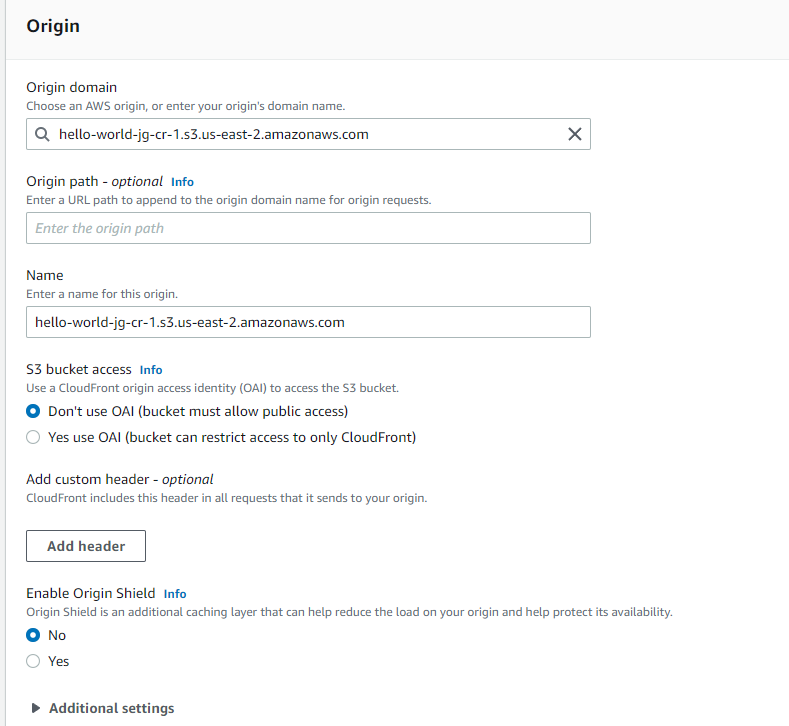

To a layman's eye, using AWS Cloudfront to enable HTTPs on a website seems like using a bazooka to blast a butterfly - massively overkill with far more power than necessary. But this challenge is meant to use a pocket-sized project to explore big powerful tools, so hey, why not?
It seems like getting started with Cloudfront is relatively straightforward for my tiny, simple usecase. They'll even transfer up to 50 GB / 2 million requests for free each month as part of the AWS free tier, which is awfully nice of them.
The Origin setup here seems straightforward, mostly selecting which resources want to get distributed out via Cloudfront's distribution network. I'm not quite sure what an Origin Access Identity is - it seems like possibly this is a way to allow content to be distributed to low-latency access areas without it being directly accessible by the public? Perhaps for content used by a site but not directly accessed? More for me to learn there.
The default caching behaviors all seem plausible, but I'll opt to redirect http requests to https, so that all traffic is ultimately flowing over https.
While I don't currently see a use for edge functions in my simple website, I did spend some time digging into just what the heck they are for my own learning.
I'll set the distribution to just US and Europe - no sense paying extra for the random scrape that might come in from overseas, it can take the slow route to Ohio.
It looks like there are options for custom SSL certificates if desired, but I'm just as happy to let Amazon handle that.
And with that... it looks like my distribution is up and running, behind https... but is it really?
Going to https://.... gives me that little lock icon by the address bar that I need, but I can still access the http:// version unsecurely, which isn't ideal. Ah, perhaps I should try accessing the site via the new Cloudfront URL?
Oh.
Well that's not great.
Thankfully, Stack Overflow comes to the rescue. Turns out, I was using the bucket url instead of the static website url as the origin for the Cloudfront distribution. Copying over the correct URL from the S3 bucket solved the issue, and I can now access my (VERY SMALL) website via the generated Cloudfront URL over HTTPS.
I'm getting the feeling that comes with the start of lots of new domains: checking the boxes and accomplishing the bare minimum for this challenge seems like it won't be too hard, but the real learning will come from going deep and looking for actual understanding and nuance in all of these disparate services and processes. So, I'll need to find a balance. Sometimes it'll be good to plow through things and get placeholders up, so long as I come back to deepen my learning later.
{kind=link}
{kind=link}
{kind=link}
{kind=link}